降低理解成本
用清晰的信息分层承接模型、工具、知识源、任务节点和卡片配置，让创建者先理解对象，再完成配置。
云内部 Agent 编排平台
一个面向云内部业务场景的 AI Agent 工作流编排平台，将模型、工具、知识源、任务节点与卡片配置组织成可创建、可编排、可调试、可复用的完整 Agent 流程。
01 项目背景
随着大语言模型能力进入内部业务场景，越来越多团队希望用 Agent 承接知识问答、任务拆解、工具调用、流程执行和结果生成等工作。
但一个可落地运行的 Agent 并不只是输入一段 Prompt。它需要同时管理模型、工具、知识源、任务节点、卡片展示、工作流关系、输入输出、执行条件和异常处理。使用者也不只有一种：Agent 创建者需要快速搭建并验证流程，业务场景负责人需要复用团队能力并稳定交付结果，平台维护者需要保证能力对象可管理、异常可定位。
核心问题：如何把复杂的 Agent 技术能力，转化为业务用户能理解、能配置、能验证、能复用的产品体验？
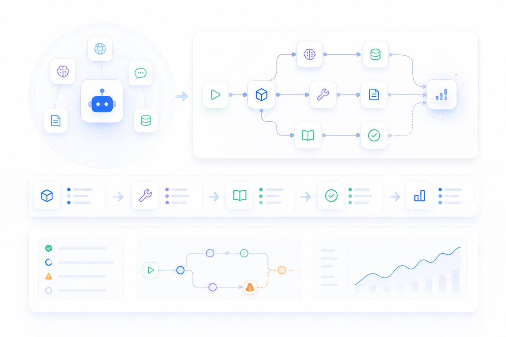
02 设计目标
用清晰的信息分层承接模型、工具、知识源、任务节点和卡片配置，让创建者先理解对象，再完成配置。
把 Agent 创建、能力选择、节点配置、流程编排、执行调试和日志查看串成一条连续任务路径。
通过节点状态、执行路径、工具调用结果、知识源命中和异常反馈，让用户看清 Agent 的运行过程。
让场景负责人和平台维护者能复用已有模板、调整关键参数，并把成熟流程沉淀为团队级能力资产。
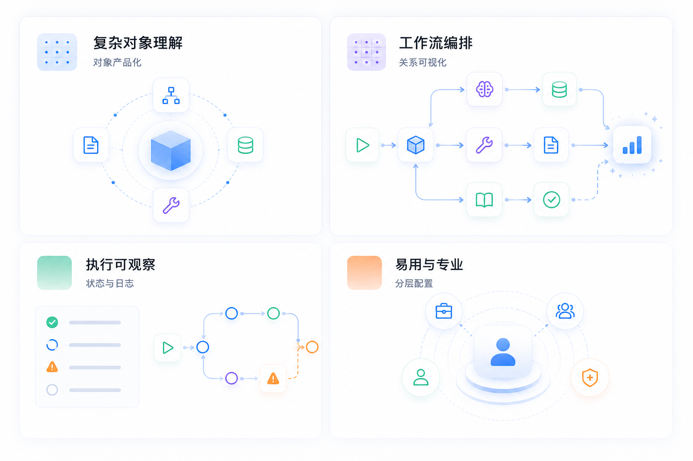
03 设计挑战
Agent Builder 的难点不在于把所有配置项摆出来，而在于为不同角色提供合适的抽象层级：新手创建者需要按流程完成搭建，熟练配置者需要细粒度调整模型、工具和节点，平台维护者还需要管理模板、版本、异常和复用边界。
04 信息架构设计
信息架构没有按技术菜单堆叠，而是围绕关键任务组织入口：创建者从新建 Agent 进入，完成能力选择、节点配置和流程编排；场景负责人从运行结果和日志进入，判断流程是否可用；平台维护者从模板、版本和异常类型进入，管理可复用能力。底层再拆成三层：资产层承接模型、工具、知识源等可复用能力；编排层表达节点关系、输入输出和执行顺序；观测层提供调试、日志、异常和版本管理。
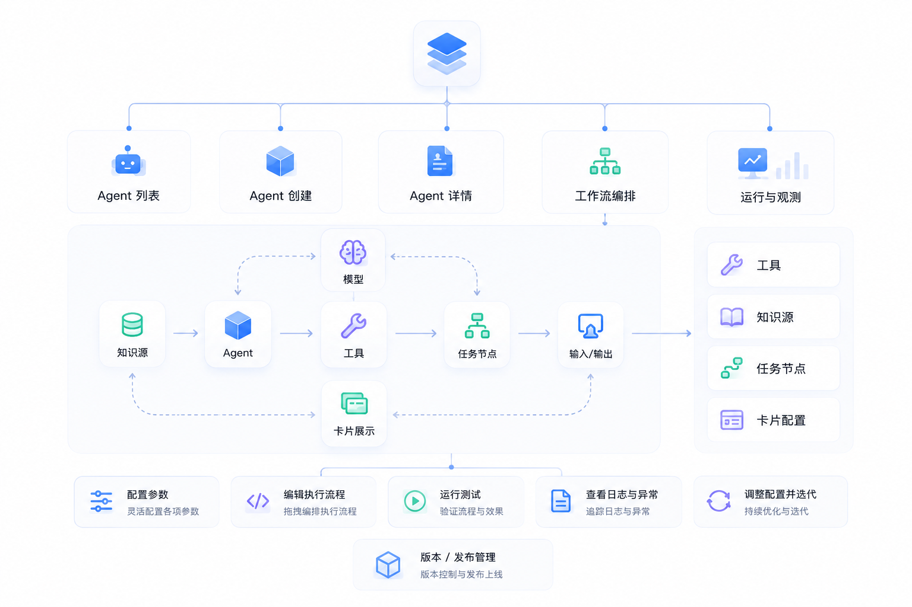
05 工作流编排设计
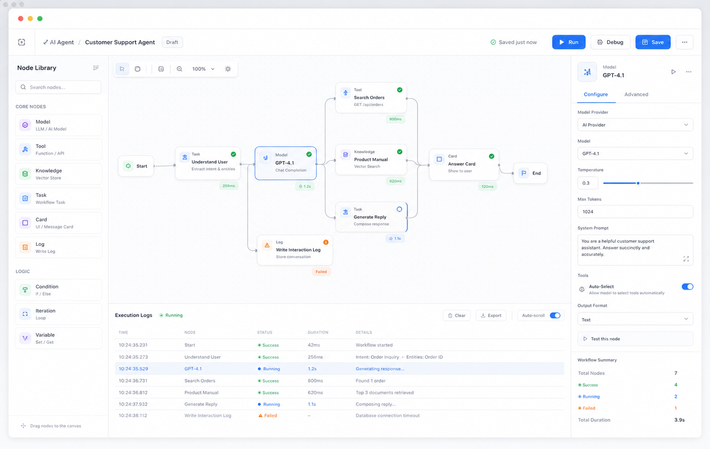
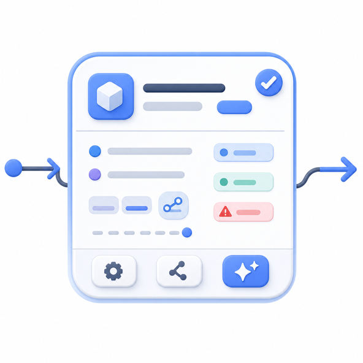
关键决策是把画布作为主工作区，而不是把流程拆散到多页表单。节点卡片承载名称、类型、输入来源、输出结果、配置完整度、异常提示和快捷操作，让用户在画布上就能判断节点是否可运行。
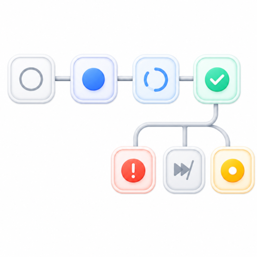
状态设计贯穿配置和运行阶段，覆盖未配置、已配置、运行中、成功、失败、跳过和待确认，让创建者能顺着节点定位断点，而不是在日志里反向查找问题。
06 节点配置面板设计
节点配置是 Agent Builder 的核心操作区。关键决策是固定一套配置主干：基础信息、输入配置、参数设置、输出定义、高级设置和测试运行；不同节点只在必要位置扩展专属字段。这样既能承接模型、工具、知识源等差异，又能降低用户在不同节点之间切换时的学习成本。
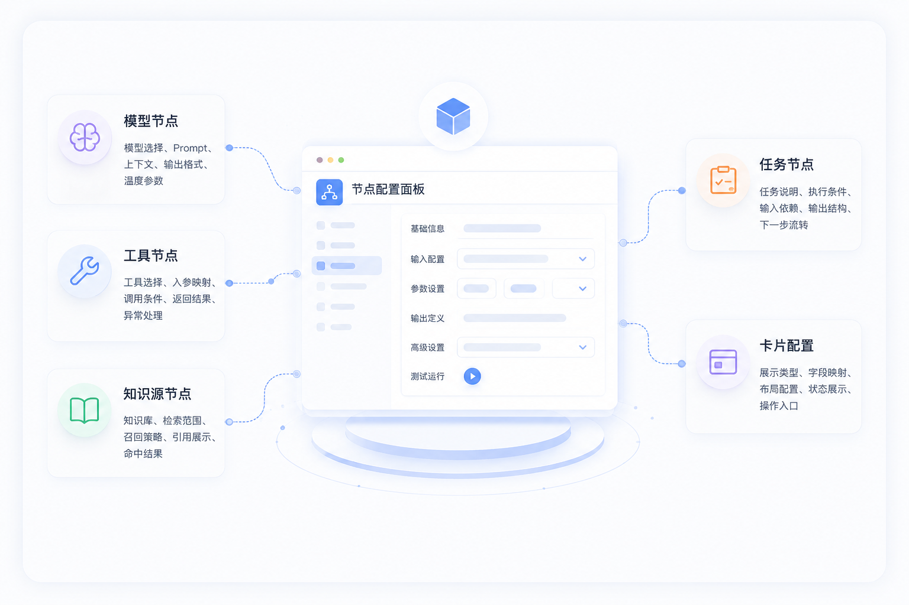
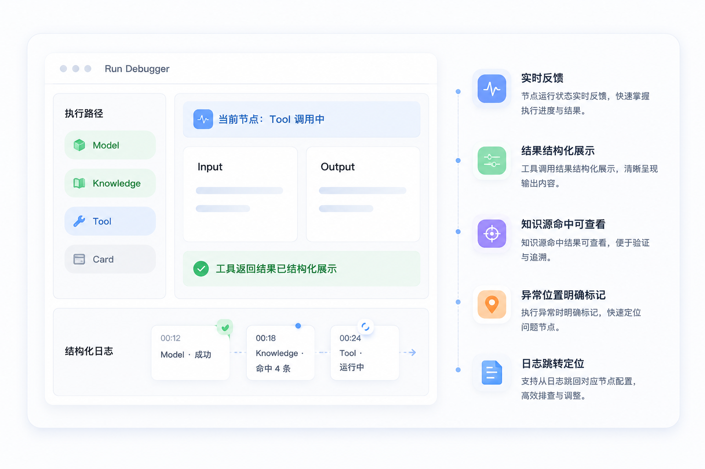
07 执行调试体验设计
调试体验的关键决策是把验证留在搭建流程内，而不是让用户跳到独立日志中心。页面被拆成三层：全局执行状态、节点执行过程、详细日志与结果。用户点击运行后，节点按执行顺序点亮，并展示输入输出、工具调用结果、知识源命中和异常位置，使调试从“看报错”变成“沿路径定位问题”。
08 执行日志与异常反馈设计
执行日志不是直接暴露给研发看的原始日志，而是面向业务用户的过程解释。关键决策是先给业务可读解释，再保留可展开的技术细节：页面将日志分成整体结果、节点过程、输入输出详情和技术错误信息，并用可理解的异常类型告诉用户下一步应该检查什么。
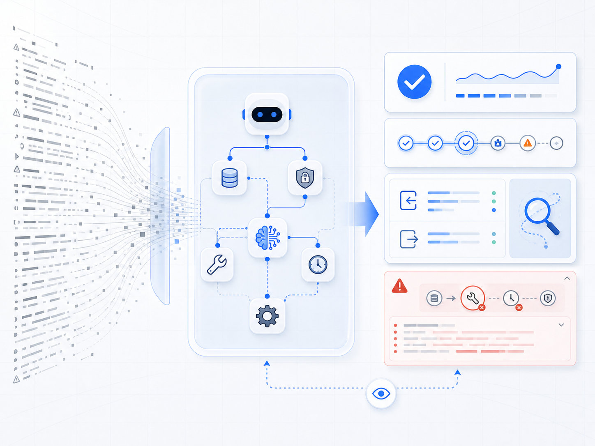
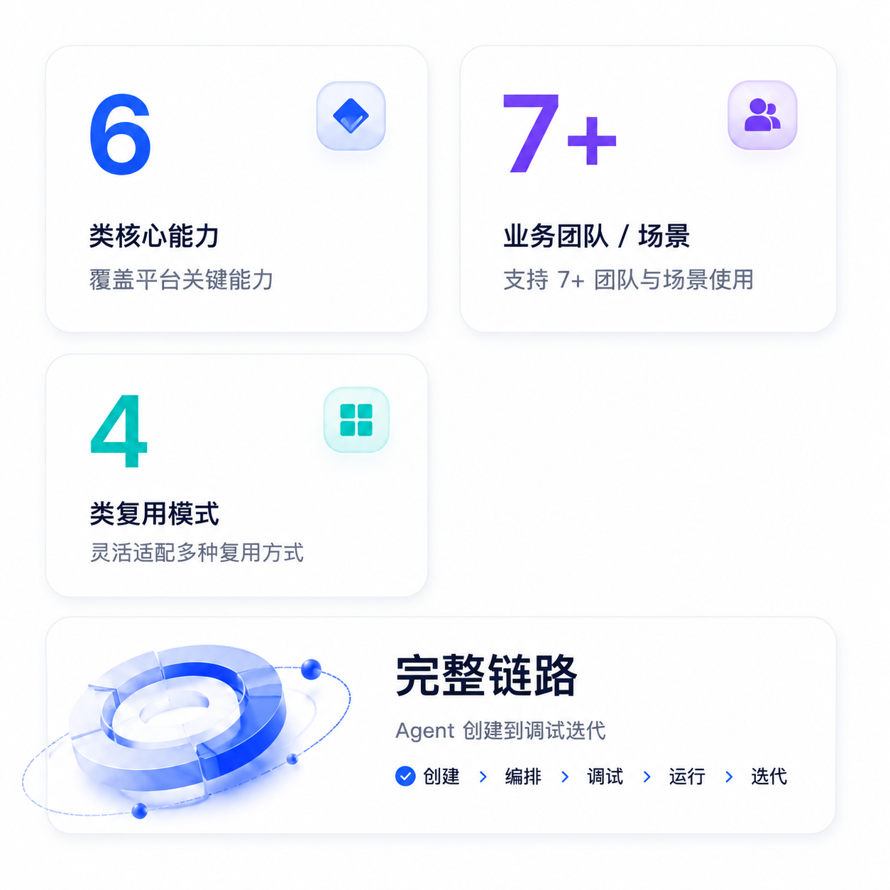
09 项目价值与成果
对创建者，平台把 Agent 搭建从分散配置收敛为一条连续流程，降低理解和调试成本；对场景负责人，运行结果、日志和异常反馈让流程是否可用更容易判断；对平台侧，7+ 个内部团队和场景可以复用同一套能力对象和设计模式，减少重复开发、重复配置和经验依赖。